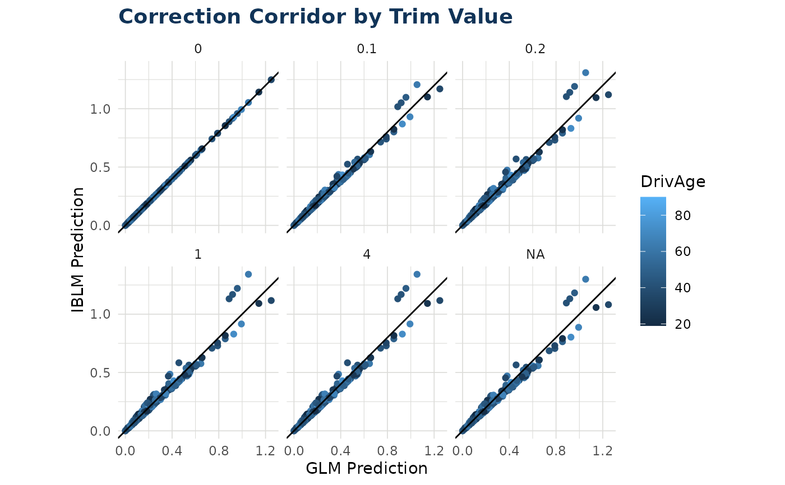

Plot GLM vs IBLM Predictions with Different Corridors
Source:R/correction_corridor.R
correction_corridor.RdCreates a faceted scatter plot comparing GLM predictions to ensemble predictions across different trim values, showing how the ensemble corrects the base GLM model.
Usage
correction_corridor(
iblm_model,
data,
trim_vals = c(NA_real_, 4, 1, 0.2, 0.1, 0),
sample_perc = 0.2,
color = NA,
...
)Arguments
- iblm_model
An IBLM model object of class "iblm".
- data
Data frame. If you have used `split_into_train_validate_test()` this will usually be the "test" portion of your data.
- trim_vals
Numeric vector of trim values to compare. The length of this vector will dictate the no. of facets shown in plot output
- sample_perc
Proportion of data to randomly sample for plotting (0 to 1). Default is 0.2 to improve performance with large datasets
- color
Optional. Name of a variable in `data` to color points by
- ...
Additional arguments passed to `geom_point()`
Value
A ggplot object showing GLM vs IBLM predictions faceted by trim value. The diagonal line (y = x) represents perfect agreement between models
Examples
df_list <- freMTPLmini |> split_into_train_validate_test(seed = 9000)
iblm_model <- train_iblm_xgb(
df_list,
response_var = "ClaimRate",
family = "poisson"
)
correction_corridor(iblm_model = iblm_model, data = df_list$test, color = "DrivAge")
